The walls are given a slick matte finish by Mamush Super Emulsion. The product has a wide selection of color options and provides consumers with exceptional value. Surfaces inside and outside can both receive its application.
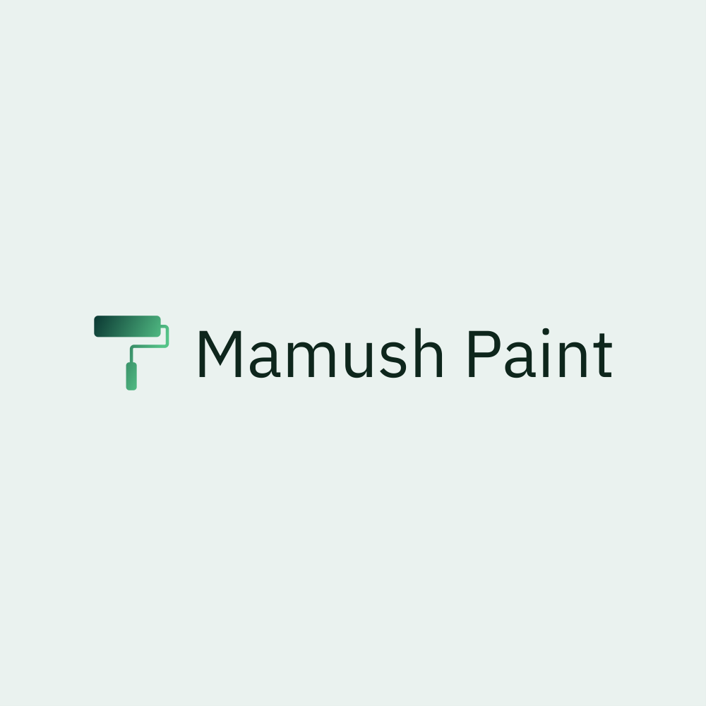
Mamush Paints Provides One of the highest quality paints in Africa. We serve various paints for various purposes.
The type of paints we provide and their functions
Construction Paints
Construction Paints are used for decorating the interior and exterior part of the buildings which range from the small houses to big sky scrapers.
Wood Paints
Wood Paints are used for styling the woods for wooden doors, wooden fences and other wooden materials. we have one of the best sold wooden paints in East Africa.
Automotive Paints
We provide paints dedicated just for automotives. with the help of the scientists from USA and Germany, we are able to serve paints for automotives with the color our customers want.
Metal Paints
Besides automotives, we also provide paints for metals. These paints can be applied for steels, iron and aluminum made materials. Our customers choose from over 500 color choices in order to decorate their gates and roofs.
Construction Paints
Our construction Paints decorate the interior and exterior parts of buildings. the construction paints Provided in mamush paint include Super Emulsion, Quartz, Wall Primer and Wall Putty.
-
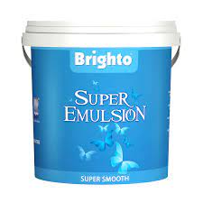
-
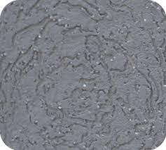
Due to the fact that Mamush Quartz is composed of mineral rocks, its color and appearance can last for a very long time without fading. It offers an excellent finish and is easily washable, making it particularly ideal for rough surfaces. It is simple to use, resulting in quicker project completion.
-

A specifically designed undercoat for brick surfaces, Mamush Paints Wall Primer ensures good adherence and improves the performance of the paint film.
-

Apply Mamush Wall Putty on external walls. It ensures the top coat has a long lifespan while assisting in smoothing out surface undulations.
Wood Paints
Our Wood paint is applied to fences, doors, furniture products, and wooden frames. our wood products include:
-

A high-quality product called Mamush Paints 2K PU Sealer is used to prime wood in order to apply the 2K PU topcoat. It increases the top coat's strength and durability to create a thick coating on the surface.
-
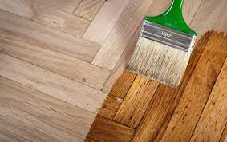
Mamush Paint Varnish will preserve and improve the attractiveness of your wooden furniture. It offers a glossy surface with a translucent finish to give hardwood surfaces a fresh appearance.
-
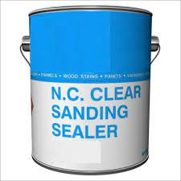
Mamush Paints NC Sanding Sealer is used to prime wood in order to apply a proper top coat, and it dries quickly. Additionally, it adds more durability and strength, enabling the top coat to build a thick layer on the surface.
Automotive Paints
Our Automotive products are used on automobiles for both protective and decorative purposes. It protects the vehicle from corrosion, heat differences, bumps, stone-chips, UV-light, etc. Our Automotive paints include:
-
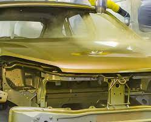
Mamush Paints Auto Lacquer is highly appropriate for farm machines, industrial bodies, and automobile bodies. UV absorbers and other environmental defenses provide excellent protection against the sun's rays and harsh weather, which can result in pulverization, gloss loss, and yellowing.
-
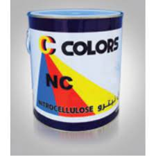
No more bothersome dings or mismatched paint jobs. Discover our all-purpose lacquers that are ideal for painting car bodies.
-
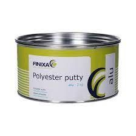
A putty made from certain polyester resins is called Polyester Putty. For the purpose of removing significant flaws, notably on vehicle bodywork and other metal surfaces, it is applied by spatula following the addition of the corresponding hardener. It is practical for all automotive repairs, industrial equipment, and other refinishing tasks. Its primary attributes include quick drying, great sanding, and high filling force.
Metal Paints
Metal paints made by Mamush Paints are effective in the protection of metals against corrosion and other harmful things as well as it is known by beautifying metallic fences and other metallic materials. The metal paints include:
-
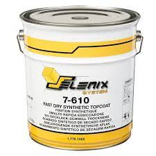
High-quality, quickly drying synthetic paint with an alkyd base is Mamush Fast Drying Synthetic Paint. It is especially advised for use in situations requiring high-quality finishes, great paint adhesion to the surface being painted, and adequate quick drying conditions.
-
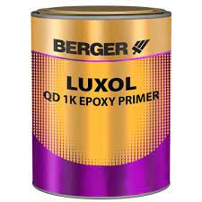
Our selection of enamels for metal substrates is created with cutting-edge anti-corrosive qualities for enduring dependability.
-
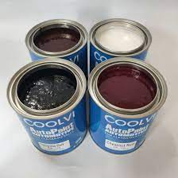
For your metal painting needs, check out our selection of 2k metal paints. These specifically formulated paints are both easy to clean and preserve and beautify surfaces.
-
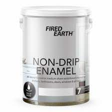
All-purpose enamels designed to give your metal surfaces vitality are more easily washable. Examine the options and select the ideal one for you.
If you want to purchase Mamush Paints' products, click here